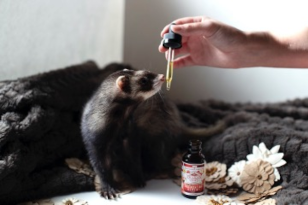

Sometimes we want a pet in our life but think it’s impossible because we are not home enough to take care of it, or we don’t have enough room. Consider adopting a small animal such as a hermit crab, mouse, gerbil, hamster, guinea pig, or even a chinchilla! Depending on which type of animal you adopt, you can provide a comfortable environment using anything from small to large cages or glass aquariums. You will also need to provide amenities for your new pet, such as bedding or substrate, toys, an exercise wheel, a water dish or drip bottle, a food dish, and grooming equipment. You also need to consider if your new pet will need a friend or if it will be happy living alone. Our “Pexperts” are here to help you decide which pet is right for you and how to provide them with a happy home. Schedule a consultation with us today!
Here are some resources to get you started: